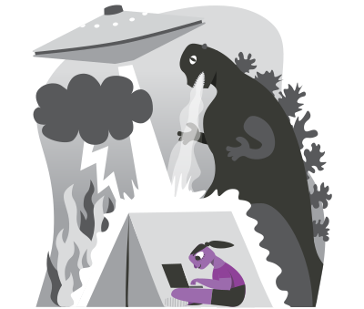

In 2021, we want to focus on improving some of the very core features of Tails, especially for censorship circumvention.
To support our work in 2021, take a minute now to donate and fight surveillance and censorship!
Censorship circumvention
We want to completely redesign how to start Tor and configure Tor bridges.
This will make it easier for people in countries where accessing Tor is blocked to circumvent censorship. According to data from the Tor project, the top 5 countries by users of Tor bridges are Russia, Iran, the US, Belarus, and China.
Persistent Storage
We want to improve the interface of the Persistent Storage settings.
Improving the Persistent Storage was your top priority when we surveyed our users in July. We want to start by improving the usability of its core features and rewriting this 9-year-old Perl application into Python GTK+. This will make it possible to improve it faster in the future.
We also want to make it possible to persist Tor bridges.
Security and maintenance
To improve the security of all applications in Tails, we want to migrate to Wayland. Wayland is a new display system for Linux that better controls how each application interacts with the rest of the system.
For example, Wayland will fix how the Unsafe Browser can be used to deanonymize you.
We will also release Tails 5.0, based on Debian 11 (Bullseye) at the end of 2021. It will bring new versions of most of the software included in Tails.
Help us fight surveillance and censorship

All our work is made possible by donations from people like you. We particularly appreciate monthly and yearly donations, even the smallest ones. Because they help us plan our work, they are the most valuable for the sustainability of Tails.
To support our work in 2021, take a minute now to donate and fight surveillance and censorship!